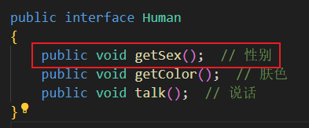
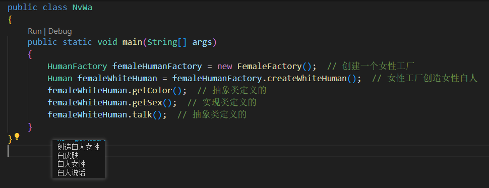

首先对第九章的结构进行整体梳理
目标变化:为了实现人种性别的不同,将每个人种又进行拆分
 UML图:把原本的黑人实现类改成抽象类,实现类分成黑人男和黑人女.
UML图:把原本的黑人实现类改成抽象类,实现类分成黑人男和黑人女.
代码编写:
UML图:把原本的黑人实现类改成抽象类,实现类分成黑人男和黑人女.代码编写:
- 修改了Human接口
 - 新增AbstractWhiteHuman抽象类,在这里面实现了共同的方法部分
新增两个实现类
-
新增MaleWhiteHuman实现类,实现了白色男性
-
新增FemaleWhiteHuman实现类,实现了白色男性
-
新增MaleWhiteHuman实现类,实现了白色男性
- 新增HumanFactory工厂接口
- 工厂实现类
- 测试类 